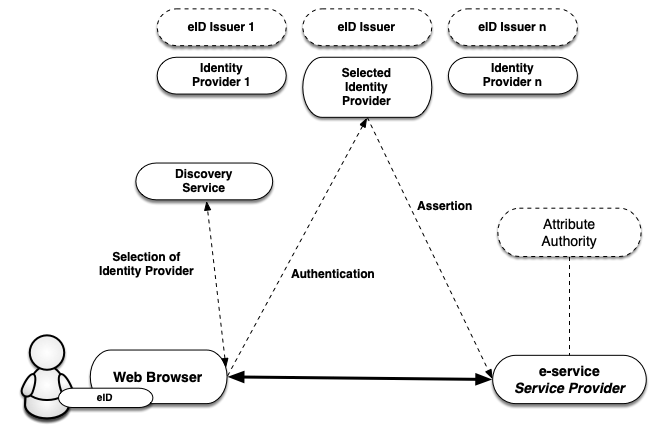
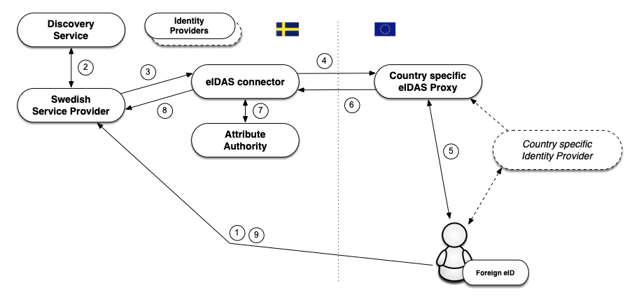

Introduction to the Swedish eID Framework
2021-11-11
Registration number: 2019-267
Copyright © The Swedish Agency for Digital Government (DIGG), 2015-2021. All Rights Reserved.
Table of Contents
-
1.1. Overview
1.2. The Assurance Framework and Levels of Assurance
1.3. Service for Collection, Administration and Publishing of Metadata
1.4. Discovery Service
1.5. Relying Party Integration
1.6. Signatures
1.7. The Technical Framework and eIDAS
1.7.1. Foreign eID Authentication
1.7.2. Signing using a Foreign eID
1.7.3. Handling of Identities
-
2.1. SAML Profiles
2.1.1. Deployment Profile for the Swedish eID Framework
2.1.2. Swedish eID Framework - Registry for identifiers
2.1.3. Attribute Specification for the Swedish eID Framework
2.1.4. Entity Categories for the Swedish eID Framework
2.1.5. eIDAS Constructed Attributes Specification for the Swedish eID Framework
2.1.6. Implementation Profile for BankID Identity Providers within the Swedish eID Framework
2.1.7. Principal Selection in SAML Authentication Requests
2.2.1. Implementation Profile for using OASIS DSS in Central Signing Services
2.2.2. DSS Extension for Federated Central Signing Services
2.2.3. Certificate Profile for Certificates Issued by Central Signing Services
-
3.1. DIGG
3.2. Other References
1. Introduction
1.1. Overview
The Swedish eID Framework (Sweden Connect Technical Framework) is adapted for identity federations based on SAML 2.0.
Relying parties receive identity assertions in a standardized format from an identity provider.
Service providers that require electronic signatures do not need to be adapted to different signature techniques based on different types of eID:s. Instead, a service provider makes use of a signature service where users with the support of authenticating at an identity provider are given the possibility to sign digital documents.
Within the federation, e-services and relying parties are taking the roles of Service Providers (SP), and authenticating services issuing identity assertions assume the roles of Identity Providers (IdP).
In cases where the service provider needs more information about the user, for example its legal authority, an attribute service (Attribute Authority) within the federation can be queried, if such a service exists. Through an attribute request a service provider can obtain the necessary supplementary information in order to authorize the user and provide access to its service.
As both personal identity information and other attributes linked to users are provided through identity assertions, all types of eID:s that have an identity provider within the federation can be used by a service provider that requires specific identity attributes, even if a particular eID does not hold this information.

Figure 1: Illustration of the communication between the different services within an identity federation.
1.2. The Assurance Framework and Levels of Assurance
The basis for the level of security applied when a user authenticates is the level of assurance for the eID required by the service provider. In order for these levels to be comparable within the federation, four assurance levels are defined (1 to 4) in the Swedish eID Assurance Framework [EidTillit] and three assurance levels (low, substantial, high) are defined by the EU regulation eIDAS. Any service issuing identity assertions must prove that the process of issuing identity assertions meets the requirements of a given level. This includes:
Requirements for the creation of an identity assertion.
Requirements for electronic authentication.
Requirements for the issuing process.
Requirements for the actual eID and its use.
Requirements on the issuer of the eID.
Requirements for establishing the identity of the eID applicant.
1.3. Service for Collection, Administration and Publishing of Metadata
A SAML federation provides information about the federation participants through SAML metadata. Participants of a federation comprises of services providing identity and attributes assertions and relying parties, i.e., service providers that consume these services.
Through the federation's metadata, participants obtain information about others participants' services, including the information required for a safe exchange of information between services. Metadata needs to be updated by each party and conform to agreed conditions.
The main purpose of metadata is to provide the keys/certificates required for secure communication and information exchange between services. In addition to keys, metadata also contain other important information for collaboration between services, for example, addresses of required functions, information on assurance levels, service categories, user interface information, etc.
An identity federation is defined by a register in XML format that is signed with the federation operator certificate. The file contains information on identity federation members including their certificates. Because the metadata file is signed, it is sufficient to compare a certificate with its equivalent in metadata. An infrastructure based on a central federation register requires that the register is constantly updated and that the members of the federation always use the latest version of the file.
1.4. Discovery Service
Within an identity federation, it is possible to offer and consume a common Discovery Service, that lists which identity providers (or eID:s) that are available for a user to choose from to authenticate. The purpose of such a service is to relieve the individual service providers that are part of the identity federation from implementing support for how users choose how to authenticate.
By making the discovery service available within the identity federation, service providers may direct its users there for the choice of how to authenticate. The discovery service interacts with the user who makes the choice and is directed back to the service provider, along with the selected authentication choice. The service provider now knows to which identity provider the user should be directed to for authentication.
Currently, there is no common discovery service available within the Sweden Connect federation.
1.5. Relying Party Integration
Relying parties, e.g., service providers, integrate towards identity providers using standardized messages and consume identity assertions that also have a standardized format.
The Swedish eID Framework is influenced by the interoperability profile ”SAML V2.0 Deployment Profile for Federation Interoperability” [SAML2Int]. This profile is supported by several commercial products and vendors as well as open source libraries. This facilitates the integration at the relying party side.
Most relying parties use stand-alone authentication servers which means that the integration adaptation for supporting the Swedish eID Framework usually is limited to the authentication solution used.
1.6. Signatures
The Swedish eID Framework enables digital signatures using any type of eID, even those not based on certificates, as long as there is an identity provider for the particular eID. The reason for this is that the identity assertion that is used during authentication for signature is standardized.
A Signature Service has as its purpose to offer digital signature services within identity federations that follows the Swedish eID Framework.
By procuring1 and introducing a signature service, a relying party within the federation can offer users to sign electronic documents with the support of the signature service. The user signature, and associated signature certificate, is created by the signature service after the user has accepted to sign the document by authenticating for the signature service2.
[1]: It is also possible for a relying party to implement a signature service based on the specifications.
[2]: It is important to point out that it is of the utmost importance that the user experiences that he or she is signing a document. Therefore, a signature flow should be used for the eID types that support this during "authentication for signature".
1.7. The Technical Framework and eIDAS
The EU regulation (910/2014) on electronic identification and trust services, eIDAS, places demands on Swedish public bodies to recognize the eID:s that other eIDAS countries have notified. This means that a public Swedish e-service based on certain rules must be able to accept a login that is performed with an eID issued in another country.
1.7.1. Foreign eID Authentication
The eIDAS technical specifications is built, as for the Swedish eID Framework, upon SAML standards and profiles, and even though the similarities are many, there are also differences between the specifications. However, a Swedish service provider does not have top directly relate to the eIDAS specifications. The figure below illustrates how the Swedish eIDAS node (eIDAS connector) acts as a proxy between other countries and the Swedish federation when a person is authenticated using a foreign eID at a Swedish service provider.

The flow is as follows:
A user with a foreign eID requests access to a Swedish service provider (i.e., wants to log in).
The service provider lets the user select the login method using a discovery service. In this case the user chooses the "Foreign eID" option.
The service provider creates an authentication request according to the Swedish eID Framework and directs the user to the Swedish eIDAS node (connector). The eIDAS node acts as an identity provider within the federation, which implies that the interaction with this service is performed in the same way as for other identity providers that comply with the Swedish eID Framework.
The received request is processes and the eIDAS node displays a page where the user chooses his or hers country1. The Swedish eIDAS node now transforms the received authentication request into an authentication request according to the eIDAS format, and directs the user to the selected country's eIDAS Proxy Service.
When the authentication request is processed by the eIDAS proxy service of the selected country, this country's technique for authentication will be used. Not all countries within eIDAS use SAML for authentication, but if that was the case in our example, the user would be directed to a national identity provider, and before that, maybe also a discovery service where the eID to use would be selected.
When the user has authenticated an identity assertion, according to the eIDAS specifications, is created. This assertion contains eIDAS specific attribute that identify the user.
This assertion is now posted back to the Swedish eIDAS node. The node receives the assertion and validates its validity. In conjunction with that the assertion is transformed from eIDAS format to a assertion according to Swedish standards the node will also invoke an Attribute Authority, to, if possible, obtain a Swedish personal identity number based on the attributes received2.
Finally, an assertion, formatted according to the Swedish eID Framework, is posted back to the service provider.
The service provider may now complement the data with additional information in order to decide whether the user should be granted access to the service.
Thus, Swedish services only have to implement support according to the Swedish eID Framework also when authenticating foreign users. However, in order for the service to fully accept the authenticated user it must also be able to handle the identity presented, and this is most likely not a Swedish personal identity number. See further section 1.7.3 below.
[1]: The correct way to describe this would be to ask the user to which eIDAS Proxy Service to send the request to. This is dependent on the nationality of the user's eID issuer.
[2]: At the time of writing there is no attribute authority available providing Swedish personal identity numbers based on eIDAS attributes.
1.7.2. Signing using a Foreign eID
As already described, a model for digital signatures named "federated signatures" is used within the context of the Swedish eID Framework. A server based signature service is associated with the e-service that is the requestor of signatures. When a user signs a document the e-service directs the user along with a signature request to the signature service. The signature service now requests that the user authenticate (at an identity provider). In conjunction with the authentication the user approves the signature. The signature service then sends the user back to the e-service along with the signature data, and the e-service stores the signature as a signed document.
This procedure makes it possible for Swedish e-services to offer signing för users having foreign eID:s, since a signature service can choose to authenticate the user having a foreign eID in accordance with the process described in section 1.7.1 above.
In this case, the Swedish eIDAS node is responsible of informing the user that the purpose of the authentication is to approve the signature of a document, and displays information about the requestor of the signature and information about what is being signed. When the user has authenticated an identity assertion is issued and sent back to the signature service who now generates the signature.
1.7.3. Handling of Identities
Identity assertions from other countries follow common technical specifications within the framework of the eIDAS regulations. These specifications define a Minimum Dataset (MDS) which is the a set of attributes that every country must supply for authenticated users and legal entities. Each country must provide an unique identifier per eID that represents a natural person. For some countries, these identifiers will be unique and persistent per person in the same way as a Swedish personal identity number is, but identifiers may have different compositions and properties. A property that may vary is the persistence of an person identifier, i.e., whether such an identifier is unchanged during a person's lifetime, or whether it is changed because the user moves to another region, changes name, or simply obtains a new eID. For some countries (for example, Great Britain) the identifier will be different depending on which of the country's eID:s that user is currently using.
In order to simplify the handling of users and identities in Swedish services the Swedish eIDAS node generates a standardized identity attribute for users that have been authenticated using a foreign eID, a so called Provisional ID (PRID). The eIDAS node will also create an attribute that declares which persistence, or lifetime, the PRID attribute has. The PRID attribute is generated based on attributes values received from the foreign authentication according to specific methods for each country. Every combination of country and method a graded based on expected persistence, i.e., how likely it is that an identity for a person is changed over time. This makes it possible for Swedish services to customize the communication with the user and to proactively provide features for a user whose identity has changed, and make it possible for this user to access his or hers account.
In some cases, a person that has been authenticated using a foreign eID may hold a Swedish personal identity number. It can, for example, be a Swedish citizen that has moved abroad and obtained a foreign eID, or a foreign citizen that is, or has been, registered (folkbokförd) in Sweden and has been assigned a Swedish personal identity number.
The fact that a person holding a foreign eID possesses a Swedish personal identity number is normally not known to the foreign identity provider, and this information will not be part of the identity assertion from the foreign country. However, the Swedish eIDAS node has the possibility to query an attribute authority in Sweden1 whether there exists a registered Swedish personal identity number for the person being authenticated, and may, if this is the case, add this information to the identity assertion that is sent back to the Swedish service provider.
[1]: At the time of writing there is no attribute authority available providing Swedish personal identity numbers based on eIDAS attributes.
1.7.4. Swedish eID:s in Foreign Services
Sweden has notified Swedish eID:s according to the assurance levels substantial and high.
A request for authentication from a foreign service provider is sent to the Swedish eIDAS node (eIDAS proxy service) via an eIDAS connector in the service provider country. At the Swedish eIDAS node, the user chooses which Swedish eID he or she wants to use to authenticate, and an authentication request is sent to the identity provider that offers authentication for the selected eID. This request is according to the Swedish eID Framework which means that a Swedish identity provider does not have to conform to the eIDAS technical specifications.
The user is authenticated by the Swedish identity provider and an identity assertion is issued (according to the Swedish eID Framework). This assertion is received by the Swedish eIDAS node (proxy service), and transformed to an assertion according to the eIDAS specifications before being sent to the foreign eIDAS connector, and then to the initiating foreign service provider.
2. Technical Specifications
This chapter contains specifications and profiles for identity federations and related services that conforms to the Swedish eID Framework (Sweden Connect Technical Framework). These documents are normative for the delivery of services within identity federations that implement the Swedish eID Framework, unless otherwise stated.
2.1. SAML Profiles
Identity federations conforming to the Swedish eID Framework are built around ”Deployment Profile for the Swedish eID Framework”, [EidProfile]. This profile is influenced by, but not normatively dependent on, ”SAML V2.0 Deployment Profile for Federation Interoperability” [SAML2Int]. [EidProfile] also contains rules and guidelines specific for the Swedish eID Framework.
2.1.1. Deployment Profile for the Swedish eID Framework
The ”Deployment Profile for the Swedish eID Framework” specification, [EidProfile], is the main specification of the eID Framework and comprises of:
How SAML metadata is constructed and interpreted.
How the format of an authentication request should be compiled.
How an authentication request should be processed, and how an identity assertion should be constructed, verified and processed.
Security requirements.
Specific SAML requirements for signature services and "authentication for signature".
2.1.2. Swedish eID Framework - Registry for identifiers
The implementation of an infrastructure for Swedish eID:s demand different forms of identifiers to represent objects in data structures. The document ”Swedish eID Framework - Registry for identifiers”, [EidRegistry], defines the structure for identifiers that are assigned within the scope of the Swedish eID Framework, and contains a registry of defined identifiers.
2.1.3. Attribute Specification for the Swedish eID Framework
The specification ”Attribute Specification for the Swedish eID Framework”, [EidAttributes], declares the SAML attribute profiles that are used within identity federations that follow the Swedish eID Framework, including services that connect to eIDAS using the Swedish eID node.
2.1.4. Entity Categories for the Swedish eID Framework
Entity Categories are used within the federation for different purposes:
Service Entity Categories – Are used in metadata to represent service provider requirements regarding assurance levels and attributes, and identity provider declarations for supported assurance levels and attribute release capabilities.
Service Property Categories – Are used to represent certain properties of services within the federation.
Service Type Entity Categories – Represents different service types within the federation.
Service Contract Entity Categories - Are used by services to declare legal and business agreements.
General Entity Categories - Entity categories that do not fall within the scope of any of the other types.
The specification ”Entity Categories for the Swedish eID Framework” [EidEntCat] specifies the entity categories that are defined in the Swedish eID Framework and describes their meaning.
2.1.5. eIDAS Constructed Attributes Specification for the Swedish eID Framework
The specification ”eIDAS Constructed Attributes Specification for the Swedish eID Framework”, [EidConstrAttributes], defines processes and rules for how an identity attribute are constructed based on the attributes that are received during an eIDAS authentication.
2.1.6. Implementation Profile for BankID Identity Providers within the Swedish eID Framework
The specification "Implementation Profile for BankID Identity Providers within the Swedish eID Framework", [EidBankID], defines rules for identity providers that implement support for the Swedish BankID eID.
Note: This specification is not normative for conformance to the Swedish eID Framework. It is only relevant for identity providers implementing support for BankID and for service providers using those identity providers. However, an identity provider that implements BankID and wants to join the Sweden Connect federation must follow this specification.
2.1.7. Principal Selection in SAML Authentication Requests
The specification "Principal Selection in SAML Authentication Requests", [EidPrincipalSel], defines an extension to SAML making it possible for a relying party to inform an identity provider about the identity of the user that it wishes to be authenticated.
2.2. Signature Specifications
This section contains references to the documents that define signature services within federations conformant to the Swedish eID Framework.
2.2.1. Implementation Profile for using OASIS DSS in Central Signing Services
The implementation profile ”Implementation Profile for Using OASIS DSS in Central Signing Services”, [EidDSSProfile], specifies a profile for signature requests and responses according to the OASIS standard ”Digital Signature Service Core Protocols, Elements, and Bindings”, [DSS].
2.2.2. DSS Extension for Federated Central Signing Services
”DSS Extension for Federated Central Signing Services”, [EidDSSExt], is an extension to the OASIS standard ”Digital Signature Service Core Protocols, Elements, and Bindings”, [DSS], where definitions required for signatures according to the Swedish eID Framework are specified.
2.2.3. Certificate Profile for Certificates Issued by Central Signing Services
The certificate profile ”Certificate profile for certificates issued by Central Signing services”, [EidCertProf], specifies the contents of a signature certificate. This profile defines a certificate extension for use by signature services.
This profile refers to "Authentication Context Certificate Extension", [AuthContext], that describes how an ”Authentication Context” is represented in X.509 certificates.
2.2.4. Signature Activation Protocol for Federated Signing
The specification "Signature Activation Protocol for Federated Signing", [EidSigAct], defines a "Signature Activation Protocol" (SAP) for implementation of "Sole Control Assurance Level 2" (SCAL2) according to the standard "prEN 419241 - Trustworthy Systems Supporting Server Signing".
3. References
3.1. DIGG
eIDAS Constructed Attributes Specification for the Swedish eID Framework.
Implementation Profile for BankID Identity Providers within the Swedish eID Framework.
Implementation Profile for Using OASIS DSS in Central Signing Services.
Certificate profile for certificates issued by Central Signing services.
3.2. Other references
SAML V2.0 Deployment Profile for Federation Interoperability.